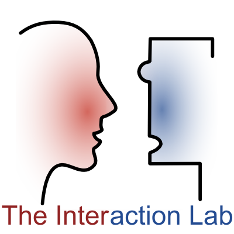

Current Work
I am supported by the NSF Expeditions in Computing grant for "Socially Assistive Robotics" in Maja Mataric's Interaction Lab. I am currently working on integrating the Microsoft Hololens in robot tutoring scenarios.
I am a first year PhD student in Maja Matarić's Interaction Lab at the University of Southern California. My interests are in robotic tutors as companions in the personalized learning process merging ideas from robotics, education, and gaming. Outside of lab, I am helping out at Clifford Street Elementary with their 5th grade robotics team and like to practice yoga.
I am supported by the NSF Expeditions in Computing grant for "Socially Assistive Robotics" in Maja Mataric's Interaction Lab. I am currently working on integrating the Microsoft Hololens in robot tutoring scenarios.
Previously I worked in Chad Jenkins's Laboratory for Progress at the University of Michigan for 2 years as well at TRACLabs in Houston, Texas under Patrick Beeson for a summer on SLAM and navigation. My work in the lab was on Fetch robots while at TRACLabs I was able to revive and work on the TRACBot.
I graduated with a BSE in Computer Science from the University of Michigan in 2018. My others interests include a lot of physical acitivities such as running, tennis, basketball, and yoga. I also have been lucky enough to travel and found novice hiking to be a very enjoyable experience. My end goal is to become a professor and be able to continue my teaching passion.